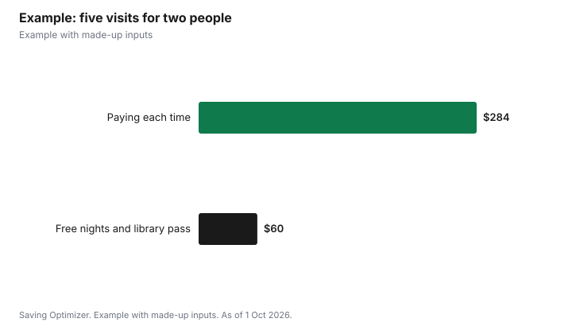

Entertainment · Canada
Free Museum and Art Gallery Nights for Adults in Canada
Most of Canada's major art galleries and museums have a regular free night or free time slot for adults. In Toronto, the AGO is free on the first Wednesday night of each month from 6 to 9 p.m., and the ROM is free on the third Tuesday night from 4 to 8:30 p.m. The Vancouver Art Gallery is free on the first Friday of the month from 4 to 8 p.m., and the Canadian Museum of History in Gatineau is free every Thursday from 5 to 7 p.m. The catch is that free slots usually need tickets booked in advance and can sell out. If you would visit more than once a year, an annual pass, such as the AGO's at $40, can beat paying admission twice.
Key takeaways
- AGO: free first Wednesday night, 6 to 9 p.m.; book free tickets ahead.
- ROM: Third Tuesday Nights Free, 4 to 8:30 p.m.; tickets released two weeks before.
- Vancouver Art Gallery: Free First Friday Nights, 4 to 8 p.m.
- Canadian Museum of History: free every Thursday, 5 to 7 p.m.
- Under 25: free at the AGO for Ontarians and at the MMFA for everyone.
- Toronto Public Library passes are released the first Wednesday of each month at 2 p.m.
Free nights at major museums and galleries
| Institution | Free time | Notes |
|---|---|---|
| Art Gallery of Ontario, Toronto | First Wednesday of the month, 6 to 9 p.m. | Book free general admission tickets online in advance |
| Royal Ontario Museum, Toronto | Third Tuesday of the month, 4 to 8:30 p.m. | Advance tickets required; released two weeks before |
| Vancouver Art Gallery | First Friday of the month, 4 to 8 p.m. | Free First Friday Nights |
| Canadian Museum of History, Gatineau | Every Thursday, 5 to 7 p.m. | Timed ticket required; special presentations excluded |
| Montreal Museum of Fine Arts | First Sunday of the month (collection) | Quebec residents |
| Montreal Museum of Fine Arts | Tuesdays, 10 a.m. to 1 p.m. (collection) | Adults 65 and older |
What regular admission costs
Knowing the regular price helps you decide whether a pass beats a free night. The AGO lists adult single-day admission at $30 for ages 18 and older. The Vancouver Art Gallery charges $29 for BC residents and $35 for non-residents. The Canadian Museum of History lists $25 for adults and $23 for seniors 65 and older, before tax, and says booking online saves 10%. The MMFA lists $32 for a day ticket that includes its major exhibition.
| Institution | Adult price | Annual option |
|---|---|---|
| AGO | $30 | Annual Pass $40 |
| Vancouver Art Gallery | $29 BC residents, $35 others | Annual Access Pass $58 |
| Canadian Museum of History | $25 (senior $23), plus tax | Membership available |
| MMFA | $32 with the major exhibition | Membership available |
| ROM | Varies by date | Memberships from $125 |
Annual passes versus free nights
The AGO says its Annual Pass costs $40, or $10 more than a single visit, for unlimited visits all year. The Vancouver Art Gallery's Annual Access Pass costs $58 for 12 months of unlimited access, which is less than two visits at the non-resident price. ROM memberships start at $125 and include special exhibitions. If you are happy with evening hours and can book ahead, free nights cost nothing. If you prefer weekends, want to see special exhibitions, or bring guests, a pass may suit you better.
Under 25 and other free admission
- AGO: Ontarians under 25 get in free, with a free annual pass; visitors 18 to 24 show ID to claim it. Youth 10 to 17 from outside Ontario pay $15 for a single day.
- MMFA: admission is free at all times for those 25 and under, though everyone needs a ticket.
- Vancouver Art Gallery: youth 13 to 18 and children 12 and under are free.
- Indigenous visitors: the AGO, Vancouver Art Gallery and Canadian Museum of History list free admission.
- Attendants: the Canadian Museum of History admits one person accompanying a visitor with a disability free, and the Vancouver Art Gallery lists free admission for caregivers.
Library passes in Toronto
Toronto Public Library's tpl:map program lends free passes with an adult library card. Passes are released on the first Wednesday of each month at 2 p.m. and are subject to availability. The AGO pass admits up to two adults, including the cardholder, and the ROM pass admits the cardholder and three guests to general admission but not special exhibitions. Other participating venues include the Aga Khan Museum, Gardiner Museum, Textile Museum of Canada, Ripley's Aquarium and Hot Docs Cinema, plus performing arts groups such as TO Live, the Toronto Symphony Orchestra and Tarragon Theatre when passes are available. Many other library systems have similar programs; check your local library.
Tips for free nights
- Set a reminder for ticket release times, such as two weeks before ROM's Third Tuesday.
- Go early in the slot; free nights get busy.
- Check which galleries are open, since some special exhibitions are excluded or extra.
- Eat before you go; museum cafés add up.
- Use transit where you can; at the Canadian Museum of History, for example, parking is $2 per half hour up to $18 a day, more than many free-night visitors expect.
Example with made-up inputs
These numbers are an example with made-up inputs. Two adults in Toronto want to visit the AGO three times and the ROM twice in a year. Paying admission each time at $30 for the AGO and a made-up $26 for the ROM would cost $180 plus $104, or $284. Instead, they use two AGO free Wednesday nights and one ROM Third Tuesday, buy one $30 AGO visit for a weekend exhibition, and borrow a library pass for the second ROM visit. Their only cost is the paid AGO visit for two, $60, saving $224. If they used an AGO library pass for that visit too, the year would be free, but passes are subject to availability, so a specific weekend date is not guaranteed.
| Visit | Paying each time (two people) | Using free options |
|---|---|---|
| AGO x3 | $180 | $60 (two free nights, one paid) |
| ROM x2 | $104 | $0 (free night and library pass) |
| Total | $284 | $60 |

Steps
- List the museums and galleries you want to visit this year.
- Note each one's free time and ticket release rules.
- Check age-based free admission for anyone under 25 or over 65.
- Set reminders for library pass release days.
- Compare an annual pass with the number of paid visits you expect.
- Book free tickets as soon as they are released.
Common mistakes
- Showing up to a free night without a ticket when booking is required.
- Buying single tickets when a pass costs only $10 more.
- Assuming special exhibitions are included on free nights.
- Missing library pass release times.
Related: when a museum membership is worth it and family outings with library passes.
Sources
- Art Gallery of Ontario, Visit, ago.ca, as of 1 Oct 2026.
- Royal Ontario Museum, Frequently asked questions and Third Tuesday Nights Free, rom.on.ca, as of 1 Oct 2026.
- Vancouver Art Gallery, Visit, vanartgallery.bc.ca, as of 1 Oct 2026.
- Canadian Museum of History, Plan your visit, historymuseum.ca, as of 1 Oct 2026.
- Montreal Museum of Fine Arts, Tickets, mbam.qc.ca, as of 1 Oct 2026.
- Toronto Public Library, tpl:map, torontopubliclibrary.ca/map, as of 1 Oct 2026.
- The ROM ticket price and visit plan in the example are made-up inputs.
Frequently asked questions
When is the AGO free?
The first Wednesday night of each month, 6 to 9 p.m. The AGO recommends booking free tickets online in advance.
When is the ROM free?
Third Tuesday Nights Free run 4 to 8:30 p.m. Advance tickets are required and released two weeks before.
When is the Vancouver Art Gallery free?
On the first Friday of every month from 4 to 8 p.m.
Is the Canadian Museum of History ever free?
Yes, every Thursday from 5 to 7 p.m., with a timed ticket. Special presentations are excluded.
Is the AGO free for young adults?
Ontarians under 25 get free admission with a free annual pass; visitors 18 to 24 show ID.
How do Toronto library museum passes work?
Toronto Public Library's tpl:map passes are free with an adult card and released the first Wednesday of each month at 2 p.m.
Researched and drafted with AI assistance and fact-checked against official Canadian sources. How we create content.
Disclosure: Saving Optimizer may earn a commission if a partner link is added later. No partnership is claimed on this page. Education only.